Yann Ics
Last endpoint – January 20, 2026
Journal
250727
-
Loin de moi cette idée de ne pas avoir vécu pour le plaisir d’un hypothétique lecteur – ou lectrice – à propos de ce qui va se jouer ici, et qui, dans l’immensité de l’insignifiance humaine, pourrait en donner ne serait-ce que l’impression que la vie ait un sens.
-
Le sens est bien entendu dans l’instant. Se projetait au delà est déjà le début d’un conte; qui au regard de la mémoire de ce que l’on a vécu s’embrume dans les actes manqués pour les uns, et révèle la félicité d’une promesse auto-réalisatrice pour les autres.
250728
-
Quoiqu'il en soit, je rêve des états de conscience autre lorsque je me confontre à l'incompréhension du dessein mercantile dans lequel je me suis englué, faute de ne pouvoir reprogrammer mon cerveau à jamais corrompu.
-
Fuire. La fuite est devenue ma raison d'être. Je ne puis rester là, ou même ailleurs.
250729
-
Fuire. Toujours être ailleurs. Bien qu'il y ait de ces instants hic et nunc sans temps. Une éternité coincée dans les limbes du temps.
-
Bref, me voilà le personnage principal de ce conte, dont la maïeutique s'inscrit dans un contexte où la folie ordinaire règne en maître.
250810
-
Déconstruire. Apprendre. Comprendre.
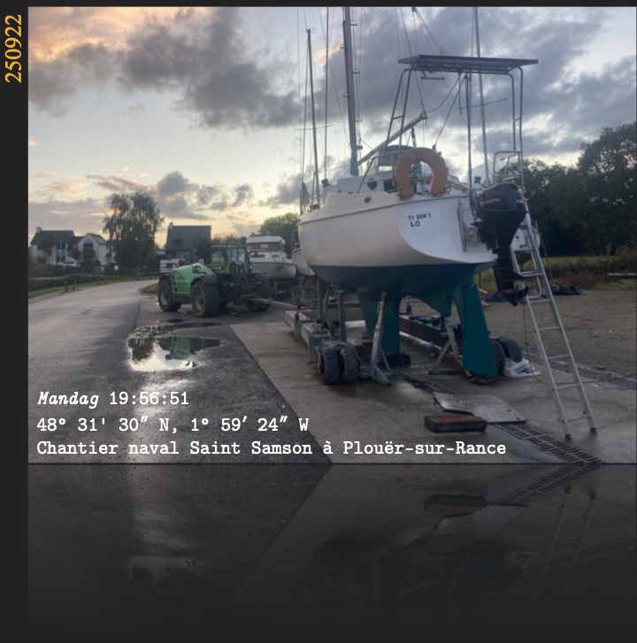
251002
-
Apprendre. Comprendre. Déconstruire.
-
Comprendre. Déconstruire. Apprendre.
-
Should I stay or should I go ... De toute façon, je dois être prêt à partir. Je sais que je ne suis pas d'ici. Qu'importe ma destination (there is no future), ma vie est le chemin. Mais les braves gens n'aiment pas que l'on suive une autre route qu'eux. De ce chemin chaotique, parmi un rhizome d'autres chemins, je suis la route qui me paraît la plus raisonnable, la plus confortable, la plus intéressante. Mais il arrive parfois que je me plante. Les choix cornéliens se multiplient. Quoi qu'il arrive, le moment du choix viendra et je le ferai, fatalement.
251004
-
Mais le vent tourne. Dehors, un grand frais, limite un coup de vent. Plein ouest. Pris au piège, me voilà pris à parti dans une confrontation avec mon destin. Décidément, ces nuits sauvages me rappellent l’insignifiance de mon être, et ma résolution résiliente.
251007
-
Et le vent tourne et se fige. Une nuit de pleine lune, claire, calme, esquisse un nouvel horizon. Je dois jouer avec le temps. Rester serein, pas à pas, tout est possible. Le cap permet la route et multiplie les chances d'arriver là où l'ailleurs sera notre ritournelle.
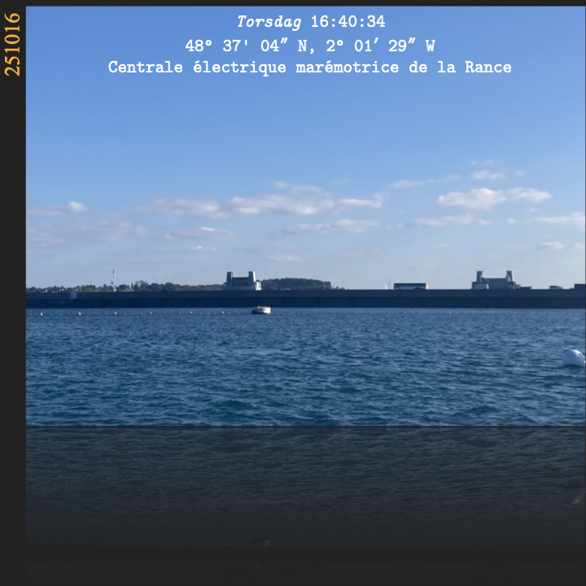
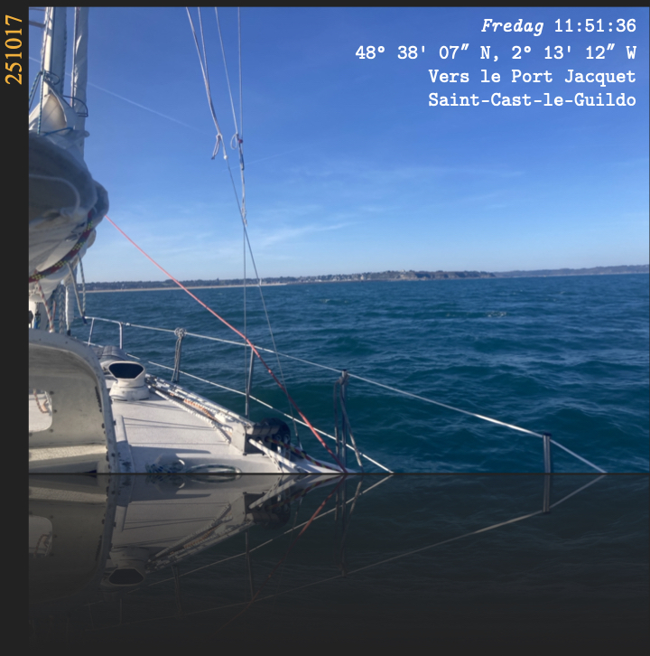
251021
-
Après avoir traversé la baie de Saint-Brieuc dimanche dernier avec une bonne brise et des rafales de plus de 30 nœuds plein sud, ce qui m'a pris environ 5 heures avec la voile d'avant format tourmentin (ayant un génois sur enrouleur), avec des creux et des crêtes faisant gîter le navire d'un bord à l'autre, je dois dire que je n'ai pas lâché la barre. Le pilote automatique partait aux fraises de toute façon. Je me suis donc retrouvé à Paimpol, non sans surprise, car c'était précisément l'escale que j'avais planifiée. Bref, je disais après avoir... et même pendant, la nature s'est révélée, bien plus puissante et présente durant les pics critiques et les accalmies, aux couleurs et aux reflets insoupçonnés, indescriptibles – bien que ce soit exactement l'objet de l'écrivant... de décrire.
-
Le bleu du ciel fendait les nuages gris, un bleu comme je n'en ai encore jamais vu, ou devrais-je dire encore jamais ressenti. Un arc-en-ciel droit, qui a oublié d'être un arc, se dressait entre les îlots qui imposaient leurs silhouettes, comme des arbres minéraux que l'on ne peut toucher.
-
La nature a la faculté de nous surprendre là où nous prenons le temps de la contempler, pour nous rappeler à notre propre existence, non comme individu, mais comme une interaction, une invitation à être, sans que l'on sache vraiment pourquoi.
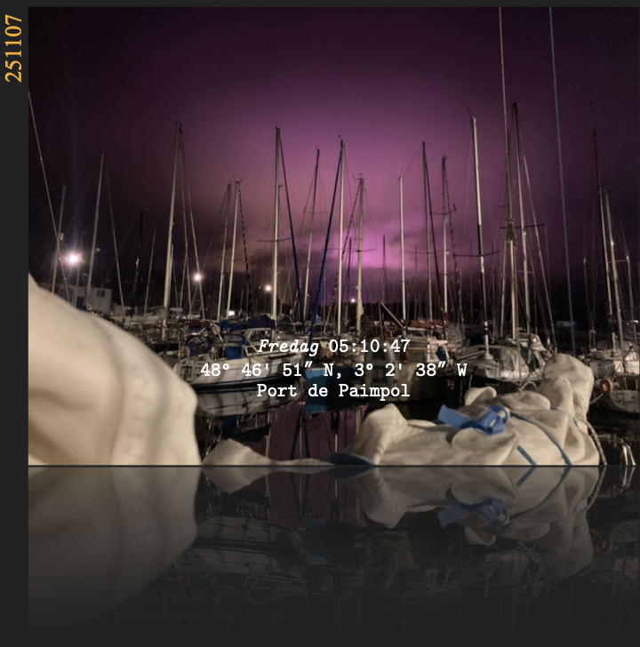
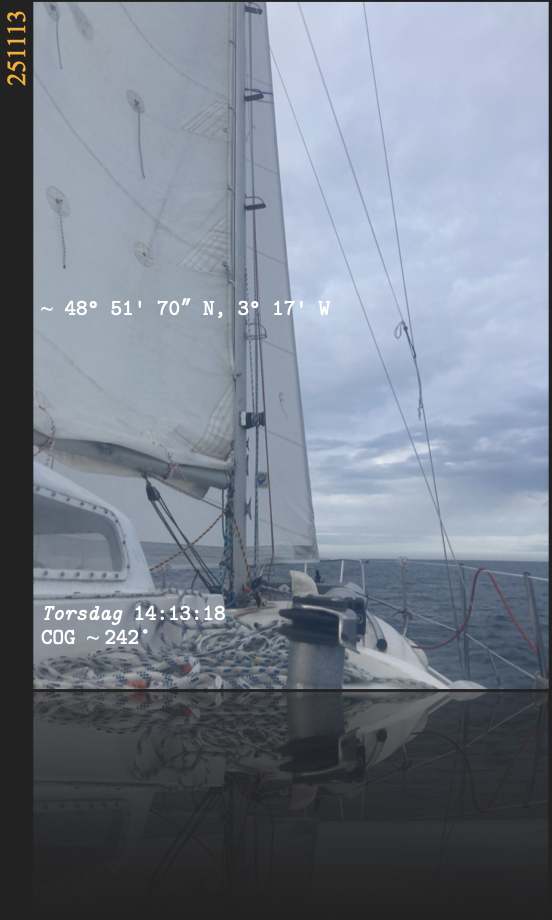
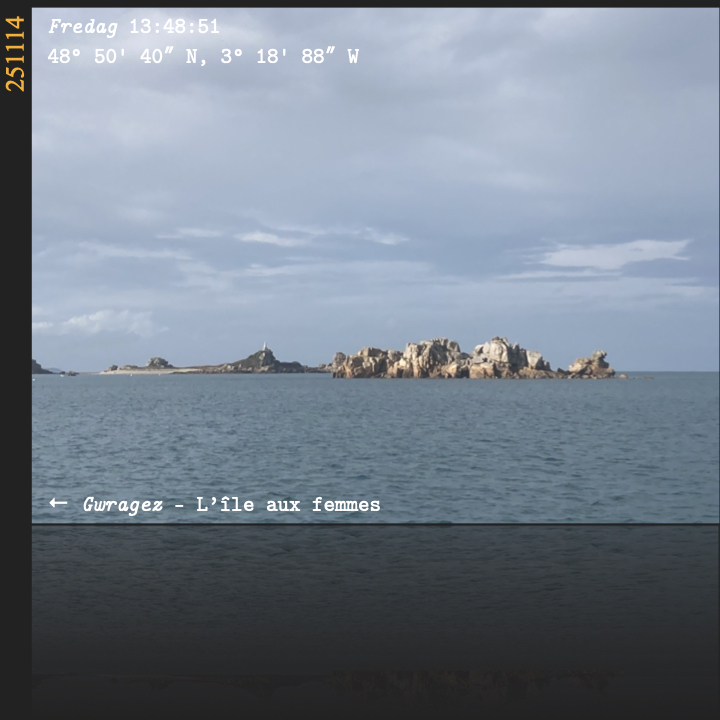

251117
-
Le temps se rappelle à moi, comme pour chaque jour en mer apportant son lot de singularités, un fragment d'éternité.
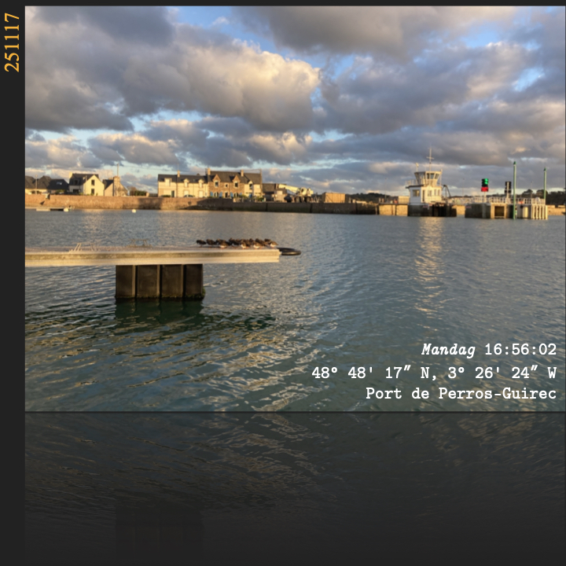
251119
-
Et se dérobe à quai. Par vent frais.
-
Je me demande à quel point ma prose peut être lue et comprise. Il ne s'agit pas là pour moi de convaincre, mais de véhiculer l'idée par des mots... bien que ce soient les mots qui véhiculent l'idée, ma vérité, mes convictions, voire mes espérances.
251122
-
J'avoue que sur mes espérances, cela reste vain. Quant au reste, l'image du monde qui m'est renvoyée par l'humain (entendu comme civilisation à sociétés de masse (je rappelle que nous ne sommes pas des fourmis)) me fait regretter d'en faire partie. Nous avons failli. Encore faut-il le reconnaître. Ce n'est pas un monde que j'aime.
-
Et je le quitterai sans regret.
-
Et je ne le quitterai qu'avec le regret d'y être né.
-
Cela dit, j'ai hâte de larguer les amarres vers de nouvelles aventures avec lesquelles je sais que l'on peut encore s'emerveiller.
251125
-
Quand les éléments vous poussent et vous retiennent, je ne sais quoi penser. Je poursuis ma route, un peu contre vents et marées, littéralement. Je ne puis rester. Toujours la même ritournelle. Là il va falloir que je lutte.
251126
-
Chaque sortie en mer me réconcilie avec la vie.
Le ciel pastel, la luminosité, les embruns, dit comme cela, cela paraît d'une platitude abyssale, un cliché éculé ... et pourtant. L'émerveillement, la découverte et l'instant dans son unicité restent un moment fort à vivre; une renaissance.
251203
-
Roscoff. Là, se dresse à l'horizon un challenge d'envergure, puisqu'il s'agit de passer la pointe bretonne. La mer d'Iroise. Du moins, s'y préparer. Le challenge est de taille en cette saison, car tous les éléments se déharmonisent – du moins de mon dessein –, me contraignant à rester là où je suis. Cela fait déjà une semaine. J'aurais voulu pousser jusqu'à l'Aber Wrac'h.
-
C'est comme qui dirait wait and see, si je puis m'exprimer ainsi.
-
Méditer et observer, pour le dire autrement.
251206
-
Lorsque l’on entend chanter les cornemuses à travers le vent, bien plus que la Bretagne, c’est l’esprit celtique, sans doute du Finistère Nord, qui vous reconnecte avec l’endroit où vous êtes.
251211
-
Pour le reste, la dissonance cognitive prend le dessus, comme un automatisme atavique, une résignation existentielle. Du darwinisme social : tu t’adaptes ou tu meurs.
251217
-
Vivre libre ou mourir.
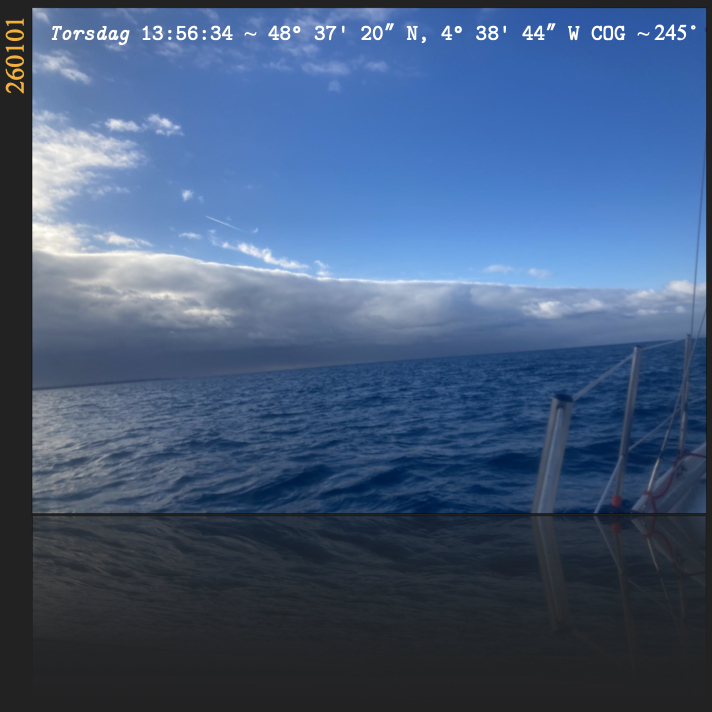
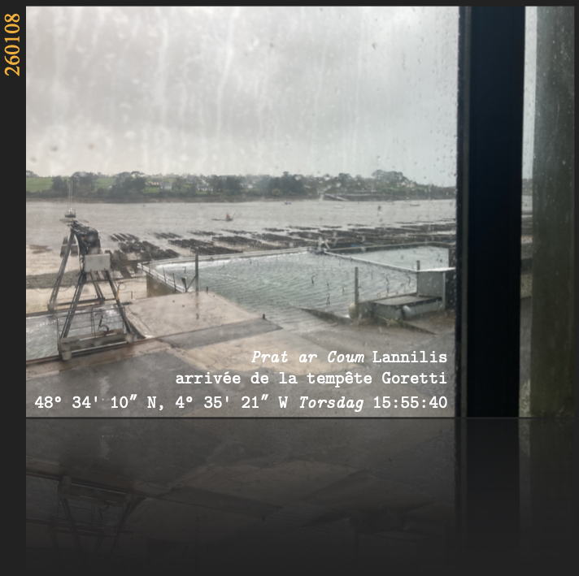
260108
-
Après une tentative de sortie avortée à Roscoff le jeudi 25 décembre due à un ressac que je n'avais pas prévu à l'entrée du port, la deuxième le mercredi 31 décembre fut une navigation plutôt relax, ce qui nous a permis de régler la grand voile jusqu'à l'Aber Wrach'. Le jour d'après, nous avons poussé vers l'Aber Benoît contre vent et marée qui ma foi fut plutôt instructif sur les performances et les limites du bateau. Bref, encore une longue escale qui se profile au pied du passage du Four, dont il va falloir attendre les conditions idéales pour rejoindre pour le moins l'Aber Ilbut.
-
À partir de Roscoff, j'avais décidé de me faire aider afin de faire face aux difficultés de manœuvre que je pourrais rencontrer dans certaines situations que je ne maîtrisais pas encore, notamment aux abords de la mer d'Iroise. J'avoue que l'expérience avec un équipage m'a laissé perplexe quant à ma capacité à interagir avec mes contemporains. Les relations sociales me dépassent, m'exaspèrent, autant que l'expérience induite qui nous a sans aucun doute élevés malgré nous. Malgré tout, je reste confus sur mes ressorts à poursuivre seul ou non.
-
Ce soir nous attendons la tempête Goretti avec des vents de 40 noeuds et des rafales de 66 noeuds. Une indicible force m'a poussé à terre. Un mélange de sagesse peut être ou de prudence sûrement car je ne suis pas familier de l'endroit, ni des conséquences de tels vents. Bref, ce sursaut survint dans la nuit vers 1h du matin et profitant de l'étale de la marée basse, je regagnai la rive. Échouage au milieu des parcs à huitres, je finis l'accostage les pieds dans la vase, dont je m'extraie péniblement et à bout de souffle. Plus tard, le patron du lieu m'accueille plutôt bien au point de me trouver un coin à l'abri, chauffé et au sec, avec vue sur l'Aber et le Ty Err 1.
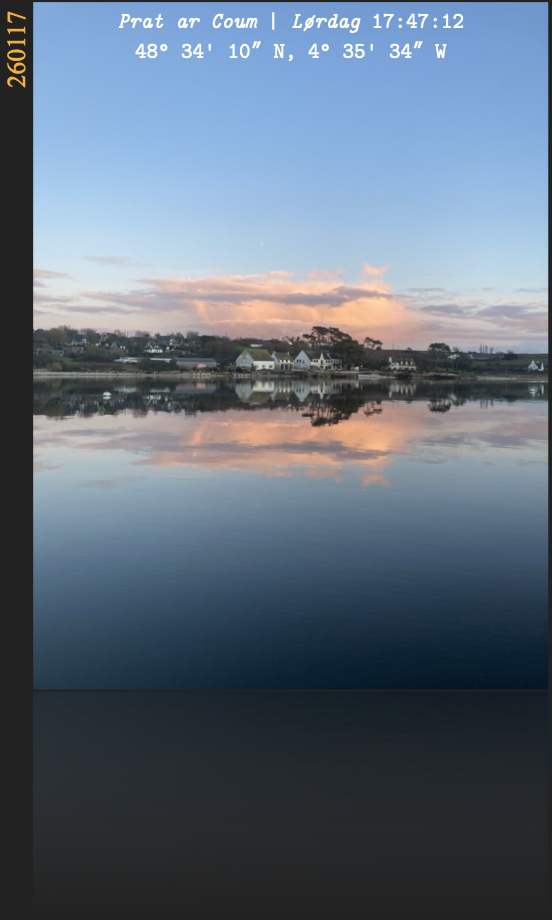
260120
-
Cette fin de journée [260117], calme sur l’étale de la pleine mer et ensoleillée, m’invita à consulter la météo pour les jours suivants. Et là, la prévision pour le lendemain affiche le même temps avec un vent de nord-nord-est. Je réalisai que c’était le moment que j’attendais pour passer le phare du Four, vers la mer d’Iroise. Je passai littéralement la nuit à préparer le départ, que je devais prendre à l’aube nautique, soit vers 8 h pour profiter du courant de jusant annoncé à 2,2 nœuds pour un coefficient de 69, jusqu’au port de l’aber Ildut.
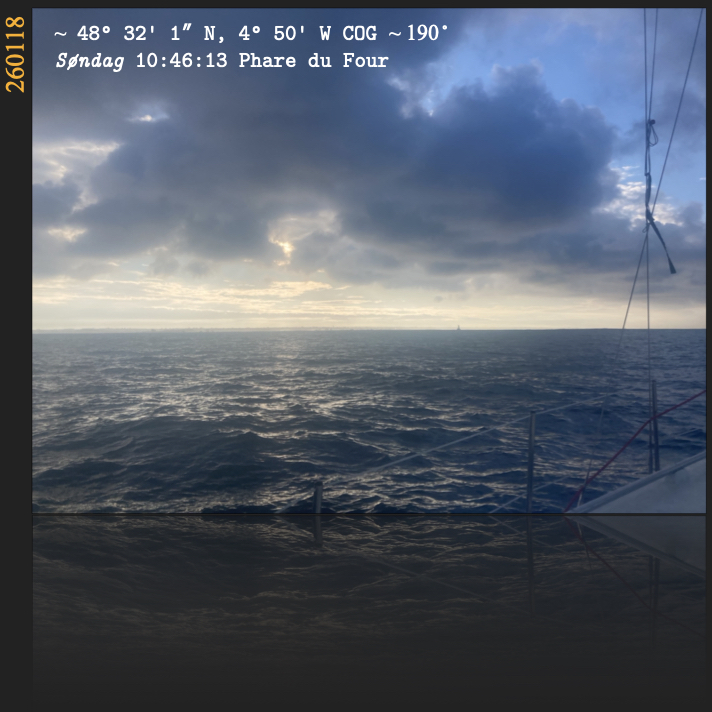
-
Le jour J [260118], la visibilité est limitée, si bien que je prends un peu de retard au départ. Il y a peu de vent, entre 3 et 8 nœuds au portant, 12 en rafales avec une houle d’ouest de 2,2 m. avec une période de 10 s. Difficile de maintenir une moyenne suffisante, d’autant plus que l’enrouleur de génois s’est une fois de plus bloqué (cela s’était déjà produit sur le trajet vers Roscoff), et avec la houle, pas de pilote automatique, pas de manœuvre sur le pont. J’ai donc opté de rester au moteur tout le long avec la grand-voile en soutien. Pas sûr qu’avec le génois, cela aurait eu un impact suffisant sur ma moyenne. Cela n’a pas empêché quelques dauphins de me rendre visite, de me suivre ou de m’accompagner (difficile d’en savoir plus sur leur intention) sur la première moitié du voyage. L’entrée en mer d’Iroise fut une grande satisfaction, ainsi que l’arrivée au port de l'Aber Ildut avec un peu moins d’une heure de retard sur mes prévisions.
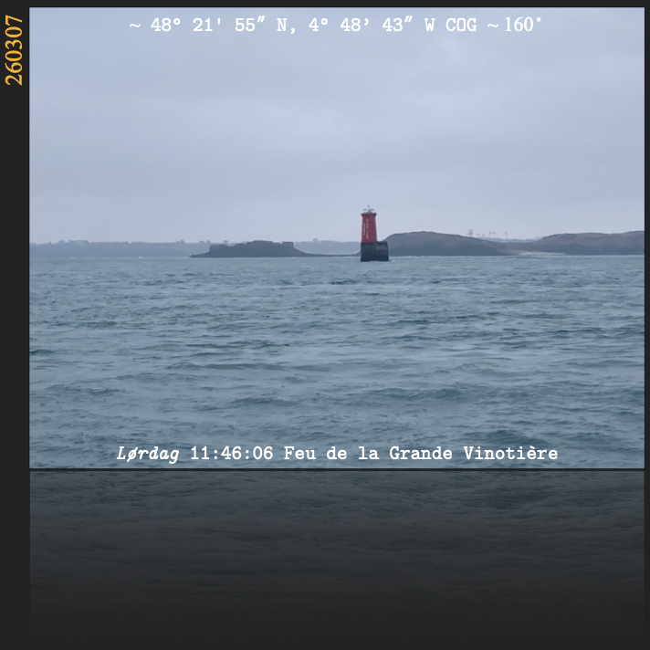